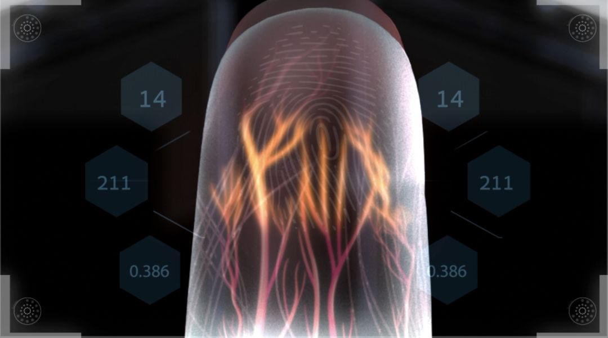

刘家真 个人情况

刘家真 Ansel
158 0548 7199
山东大学 | 本科
liujiazhen@mail.sdu.edu.cn
计算机科学与技术
学业情况
- 学业绩点：93.56
- 学业排名：2/78
熟练语言
科研经历

指静脉识别研究
2018.09 - 至今
课题组成员 | 曾任该课题导师机器学习课程助教
- 我从大二下学期开始跟随导师进行指静脉识别方面的研究。在这期间，我稳扎基础，广泛阅读了该领域内多篇论文，学习了各种
先进的算法（包括相近领域的算法)，并且总结了该领域的研究现状以及面临的问题。在导师的指导下，我们提出了一些全新的思考，形成了一套更加完善的指静脉识别理论。
大量的实验验证了我们的想法，相关的论文和专利如下（点击显示摘要/详细信息）：
-
[1]"Sensor-Interoperable Finger Vein Recognition Using a Shallow Convolutional Neural Network"
第二作者(导师一作)，已投IEEE Transactions on Information Forensics and Security(TIFS)，在审。该期刊影响因子6.211，位于Computer Science学科的Q1。 -
[2]"Challenging task-oriented finger vein recognition using a triplet convolutional neural network"
第二作者，完稿修改中。 - [3]"基于浅层卷积神经网络的指静脉识别方法" ，[1]的对应专利，在审
-
[1]"Sensor-Interoperable Finger Vein Recognition Using a Shallow Convolutional Neural Network"
- 我的主要工作包括指静脉识别领域的研究调查，算法的设计和开发以及论文的排版。
天文光谱分类/星象提取研究
2019.05 - 至今
课题组成员 | 该课题导师科研助理
- 在接触了一定的ML/DL知识后，我具备了一定的编程能力，正好我的一位任课老师需要对设计的算法模型编程检验，在大三上学期，我成为了该导师的科研助理并开始了算法验证工作。之后由于出色的表现，我
又加入了与我校物理学院开展的合作研究中，负责将已有的python算法迁移到Linux的C语言平台下。在这个课题研究中，主要的论文情况如下（点击显示摘要/详细信息）：
- [1]"一种层次化的太阳黑子快速识别方法" 第二作者，光电工程，中文核心期刊，影响因子1.015，已录用，7月见刊。
- [2]"Automated Classification of massive spectra based on Enhanced Multi-scale Coded Convolutional Neural Network" 第三作者，Universe，期刊位于ASTRONOMY学科的Q2，影响因子2.165，第三作者，已录用(Accepted)。
- [3]"Spectral Feature Extraction by Partial and General Methods" ，第二作者，目前已完成了论文的初稿，还在进一步修改。
- 我的主要工作包括算法模型的检验，代码的重新开发以及论文的排版。

国家级大学生创新创业训练计划
2019.09 - 至今
项目队长
- 在广泛阅读论文的过程中，接触到了更多的有关CV的知识，对对抗神经网络（GAN）产生了研究的兴趣，因此在大三学期申请了国家级创新创业训练计划：
- 立项的主题是基于GAN进行图像生成和增强研究，前期的研究以兴趣驱动为主，尝试手动（借助框架）实现了原始的GAN模型、CyclyGAN、DCGAN等比较有意思的模型，期间接触到了 超分辨率、风格迁移、上采样等概念，有了一些想法，又进一步拓展到图像分割领域（不仅仅只学习研究GAN）。之后的研究就开始思考怎么利用GAN来增加其他课题研究的 创新性，接触到了利用GAN生成训练数据进行数据扩增、通过知识蒸馏缩减模型规模等概念。
- 团队立项时只有两人，但是都具有很强的研究兴趣。GAN这一概念非常具有创新性，也带给我很多灵感，我尝试了很多创新的想法用在其他课题研究中。虽然这些创新性的想法有待进一步的检验， 但是在这个过程中我开拓了自己的思维，培养了一定的编程能力以及独立思考的能力。
荣誉｜成绩
曾获荣誉
2018及2019年国家奖学金
2019年全国大学生数学建模竞赛本科组二等奖
2019年山东省软件设计大赛一等奖
2019年“山大微电杯”山东省大学生单片机应用创新设计大赛三等奖
2019年山东省大学生三下乡志愿活动优秀学生
2019年山东大学学生创新创业活动先进个人
2018年山东大学三好学生
2019年山东大学优秀团员
2018及2019年山东大学学业一等奖学金
2018年山东大学社会服务一等奖学金
主要课程情况
其他
工作经历
2018.9 - 至今
在思想上我积极向上，乐于助人。大二学年出于一些原因，我获得了担任班级班长的机会，尽管我知道成为班长需要付出更多精力处理学生工作，也会面临更多压力，我还是选择了成为班长，因为我希望在工作中得到锻炼，提高与人沟通的能力，让自己的发展更加全面。在担任班长期间，我组织开展了多项班级活动，如定期班会、心理班会、朗诵比赛等，在组织活动的过程中我磨炼了自己的心性，学会了以更好的方式待人处事。任职期间曾获机电与信息工程学院优秀学生干部称号。
曾接触过的AI知识
2017.9 - 至今
我始终对先进事物保持积极探索的态度，对科学研究很有耐心，大学空闲生活几乎都是在实验室中度过。在实验室学习期间，我尝试做过图像闭集识别、开集识别，目标检测，图像语义分割，图像生成等任务， 也由于数学建模的需要学习过NLP的一些知识，比如LSTM模型以及BERT预训练模型。学习的过程以兴趣为驱动，注重实现（借助框架），在实现的基础上通过代码和论文（包括一些博客的资料）再去理解 这些优秀算法的思路。虽然不是系统全面地进行学习，但让我快速吸收到了很多AI方向的知识，具备了一定的基础。因此，未来我希望能在某一领域深入挖掘，细微而全面地学习这些知识。
社会实践经历
2018.6 - 2018.9
除了学习科研外，我曾经投身社会实践，作为队长组织了一支实践队伍去我的家乡针对当地农产品展开调研。进行社会实践的主要目的是锻炼下自己的心境，在实践中磨炼自己的能力。当时我们队伍全部由大一新生组成，但是大家团结互助，积极认真地完成每一项任务，这种态度让我们队伍在激烈的竞争中脱颖而出，获得了校级优秀团队的称号，我也获得了山东省大学生"三下乡"优秀个人称号。